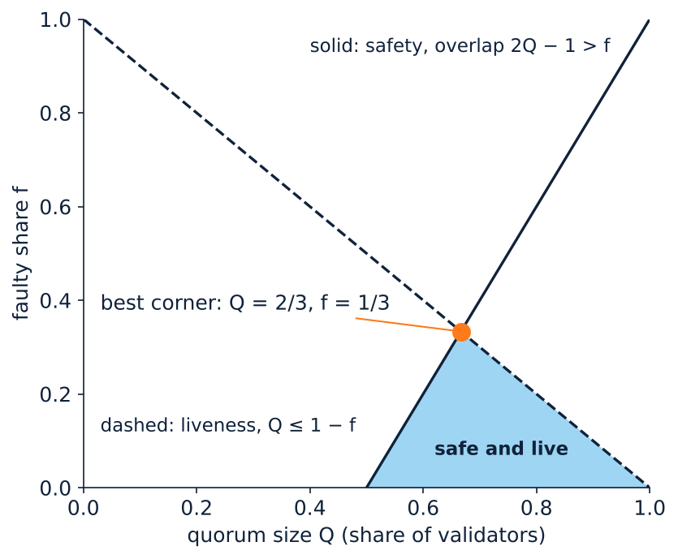
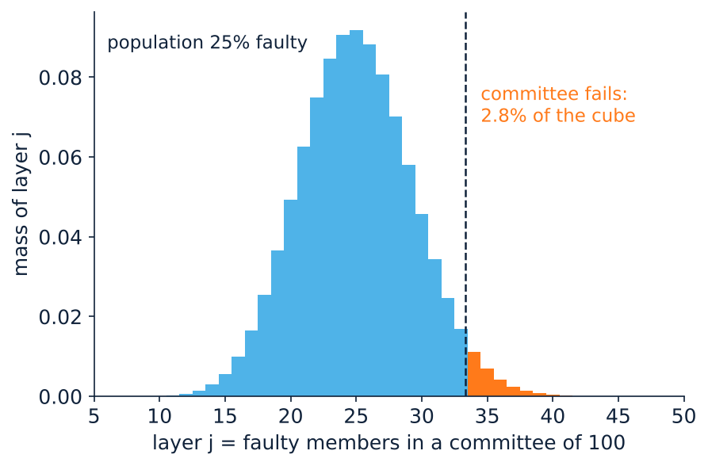
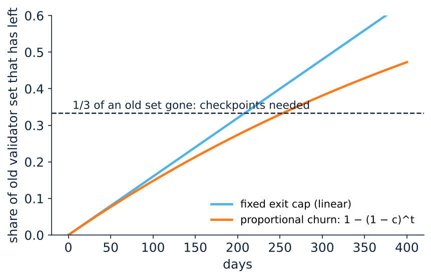
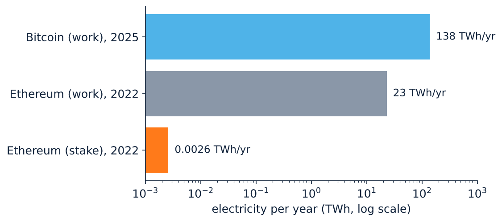
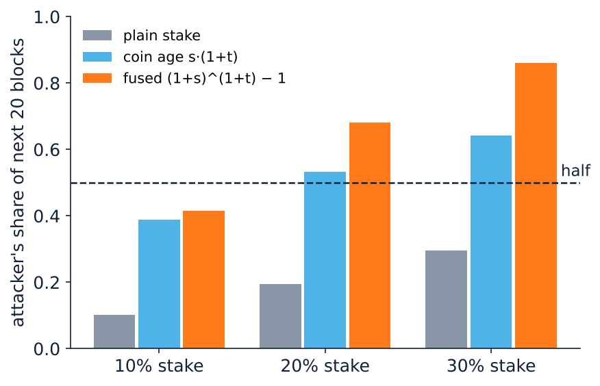
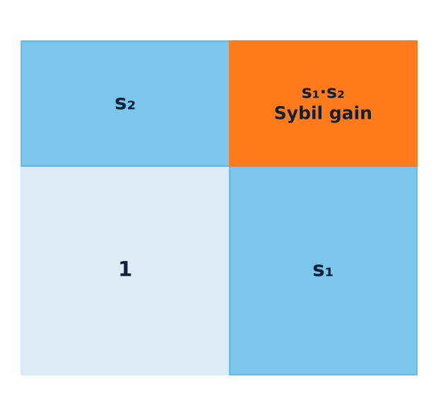

Every main alternative to proof of work fits one picture: an attacker's chances compose by mult-add, waiting for confirmations is a mult-add power, and the famous 1/2 and 1/3 lines are the identity and a corner of the cube. All of that restates known results. The two genuinely fused ideas I tested both weaken security.
Chance an attacker with share q ever catches up from z blocks behind: rz with r = q/(1−q). Write a = r − 1 and it is 1 + a⊕z, a mult-add power.
Weighted mult-add is a ⊕k b = a + b + k·ab. With k = 1 it is plain mult-add, 1 + (a ⊕ b) = (1+a)(1+b). With k = −1 it is "at least one of two independent things happens": 1 − (1−a)(1−b).
| Method | What keeps it safe | In the algebra | Verdict |
|---|

Two quorums must share an honest validator (solid line) and a quorum must form without the faulty ones (dashed line). The safe triangle's top corner is Q = 2/3, f = 1/3. Ask three quorums to share an honest node and the corner drops to 1/4; in general it is 1/(k+1).

A committee of 100 drawn from a population that is 25% faulty is a 100-dimensional cube with sides 0.75 and 0.25. Layer j holds the committees with j faulty members, Pascal-weighted. The orange layers break the 1/3 rule: 2.76% of the cube. At 1,000 members it is about one in 600 million.

Old keys that have left can't be punished, so an attacker can buy them. The share of an old set that has left climbs as a k = −1 power, 1 − (1−c)t. At Ethereum's exit cap of 256 ETH per epoch on 36 million staked, a third of an old set could be gone in 208 to 253 days. That is a loose upper bound; Ethereum's own checkpoint rule is stricter.

Bitcoin uses about 138 TWh a year. Ethereum used about 23 TWh before the Merge and about 0.0026 TWh after it. Bitcoin now uses roughly 53,000 times what Ethereum does.
The natural fused rule gives each validator the weight (1+s)(1+t) − 1, stake fused with the time t since it last made a block. That is Peercoin's 2012 coin age with a steeper curve, and it has the same flaw: an attacker stays silent, lets age pile up, then switches on.
In 200 simulated runs each, a 20% attacker split over 20 accounts took 68% of the next 20 blocks under the fused rule, and 53% under plain coin age. Under plain stake it took 20%. Lean checks the two-party version exactly: a 1/5 stake silent for 10 epochs outweighs a 4/5 stake that produced 1 epoch ago.

log(1+s) is the weight that adds under mult-add, so it looked like the algebra's own choice. But stake adds with plain +. In the coordinate W = 1 + s, splitting one account into two turns 1 + s1 + s2 into (1+s1)(1+s2), and the extra is exactly the corner square s1·s2. Splitting a 30% stake into 1,000 accounts raises its weight 14%.
The picture gives a clean rule, proved in Lean for any number of equal accounts: a weight is split-proof exactly when it adds under +. Any rule that rewards the fused corner pays it to whoever splits; any rule that punishes it (stake squared) pays whoever pools.

Proof of work pays for security as a flow: power times time, an area that has to be bought again every block. Proof of stake pays with a stock: capital locked once, and burned only when someone is caught cheating. The 99.99% saving is entirely that swap from a flow to a stock. The algebra describes it but adds nothing to it.
The cost of the swap is in the attacks the table lists: nothing at stake (fixed by slashing, where being caught is 1 − (1−d)m with m watchers), long-range attacks (fixed by checkpoints), and stake concentrating in pools. In January 2026 the largest liquid staking pool held about 24% of staked ETH, below the 1/3 line but close enough to watch.
lean/ConsensusFused.lean: 35 theorems in core Lean 4.24.0, no mathlib, no sorry, standard axioms only. Highlights: the mult-add power climbs the cube, 1 + k·a⊕ₖn = (1 + k·a)n; the 51% step is exactly 0 and its powers stay 0; n > 3f gives honest quorum overlap and n ≤ 3f does not; three quorums need f < n/4; the majority-of-three map pulls every share below 1/2 down; the Sybil corner and the split-proof rule for additive weights; both coin-age flips; slashing detection as a k = −1 power; VDF doubling and Pietrzak's halves.
Lean does not check anything with real numbers or logarithms, or that a race is a gambler's ruin or a committee a binomial draw. Those are in checks.py, whose Monte Carlo runs match the exact formulas: double spends against Rosenfeld's formula, committees against the binomial tail, selfish mining against Eyal and Sirer.
Files: math-theory/consensus/ in the project folder: index.html, checks.py, checks_output.txt, figures.py, figures/, lean/ConsensusFused.lean, SOURCES.md. Research only: nothing here is investment advice.